Evolution
The Evolution project is a sequel to Ludivine Lechat's Graphic Cellular Domestication postgraduate program at Transmedia. She devised a set of parental cells and evolutionary rules with which she could domesticate graphic cell organisms from microscopic components.
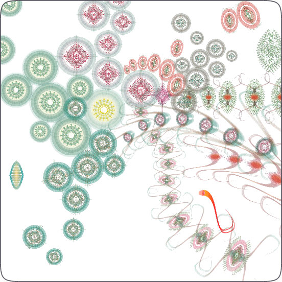
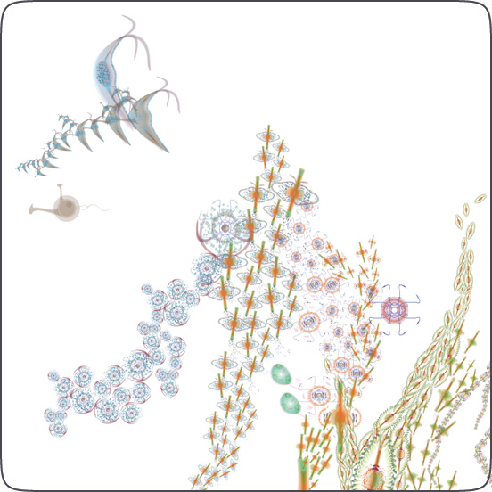
These cells are great material for a genetics proof-of-concept in NodeBox. By recombining the domesticated cells creatures are created that interact with each other in a hostile environment. The idea is to extract a tested set of genetic algorithms from the project later on. These can be used in parts of the planned Gravital research project by applying them on graphic design in general instead of roaming creatures. What happens when we use genetics to describe or create visual communication? Is there a generative strategy to design? Is there something like a design crossover, a historical gene tree from which contemporary design emerges? Is it possible to recombine "good designs" to create even better ones?
Anyway, on to the Evolution project.
The factory
The factory is the place where creatures are born and bred. Each creature is constructed randomly from a pool of components (or body parts): we discern between heads, tails, cores, flippers and tentacles. The way a creature is constructed determines it's behaviour later on in the survival game. This makes the environment entirely procedural: there is an endless variation of creatures and therefore an endless variation of behaviour and ways creatures interact with each other!
Different components and their behavioural impact:
- Heads: make a creature smarter, imbue it with a cunning. This cunning allows the creature to employ better hunting strategies (ambushing and intercepting) or better evasive strategies (deception, hiding in the flock in the hope that the predator loses interest and starts picking on someone else).
- Tails: make a creature more agile, allows it to take sharper turns - a greater potential when chasing and evading.
- Cores: the complexity of a creature's body influences its fitness and its intelligence. Bigger creatures have a greater health and are more difficult to hurt, more complex creatures have a greater cunning. The drawback of being big is that you become slower and more pacifist.
- Flippers: enhance a creature's velocity. Bigger flippers makes a creature faster.
- Tentacles: are a creature's main weapons. More tentacles not only look more daunting, but make a creature more ferocious and self-assured. Creatures with a lot of tentacles tend to be very aggressive. Combined with a low cunning you get a sort of brute that relentlessly keeps on chasing a prey. Combined with a high cunning you get a typical tiger-hunter that tries to ambush a flock of prey and hunts down the weakest creatures first.
| 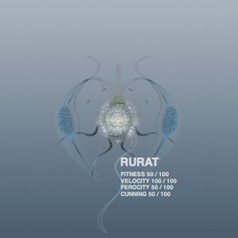 | 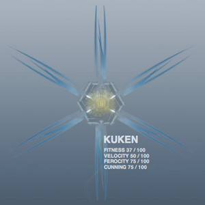 |
| 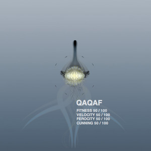 | 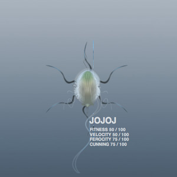 |
| 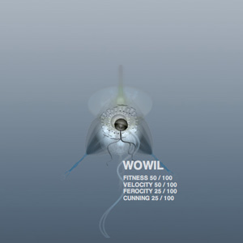 | 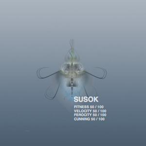 |
| 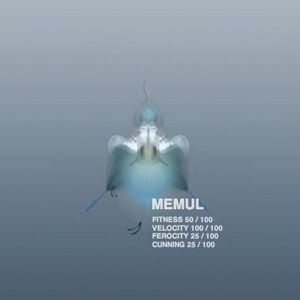 | 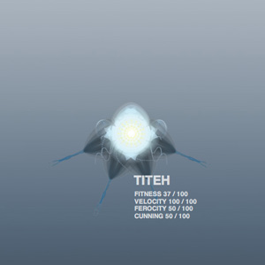 |
| 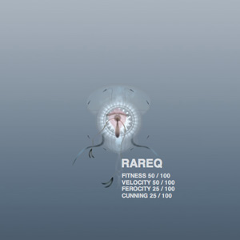 | 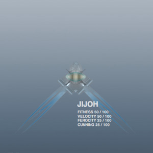 |
| 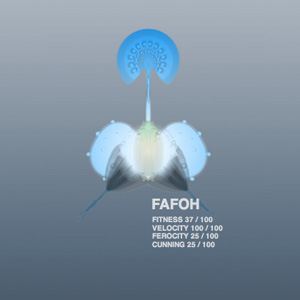 |
Genetic recombination
The factory gets a bit more interesting once we have determined a number of creatures that have a high potential of surviving a hostile environment. These we can then use as ancestors to evolve new creatures that are better balanced and have a higher chance of rising up in the food chain. A good breeding programme is essential for the world's evolution.
In the example below we cross-bred Docole and Timude species. The Docole is a fast and aggressive predator, but not too bright. The Timude on the other hand is a cute and docile flocker, fast and bright which gives it good evasive qualities. Notice how their children have both the Docole's tentacles and the Timude's flippers, it's not that ferocious anymore but it has flippers for speed and some basic intelligence, which will likely improve its chances of finding food.
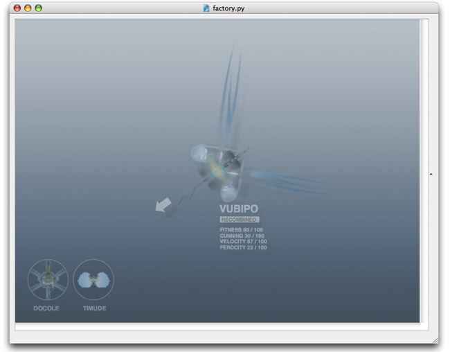 Play movie
Internally in the programming code, each creature is stored as a little piece of DNA. Creatures are recombined using a genetic algorithm that constructs a new DNA from the information stored in both ancestors' DNA. You can watch the movie in which an even better generation is spawned from crossing the Docole and the Timude.
| Docole ancestor | Timude ancestor 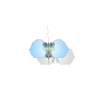 | Vubipo child 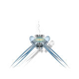 |
The arena
Creatures pit their strengths against each other in the arena. Here, they get to fly around, flock together, hunt down enemies, struggle for survival. In the example below, the Docole is pitted against three of the Timude species, which is kind of a long and boring match because the predator is way to dumb to catch any of Timude, and the Timude are way to weak to fight the Docole. What you get is a lot of running around in circles.
The creatures' motion is handled by the flocking algorithm in the Boids library, expanded with procedures for chasing and evading, cooperation and hunting strategy.
Typically, a fight goes a bit as follows:
The predator hunts down the flock of preys in search for food. Ideally, if the predator is smart enough, it will quickly try to single out the weakest individual and separate it from the others. The predator can then use strategic maneuvers like predicting where the prey will go next, or try to ambush it.
The prey flock around together. They will try to outrun the predator. If they are smart enough and the predator is not too daunting they will attempt to fight back, or even work together in cooperation to beat it. Smart preys that are not strong may attempt to hide in the flock. The predator can discern individuals in a flock. It may decide to lay off and choose a new victim. Dumb preys mill around in confusion without a general strategy.
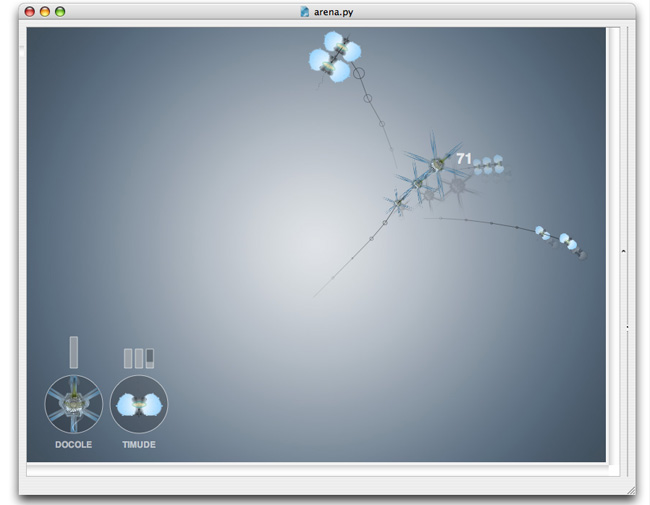 Play movie
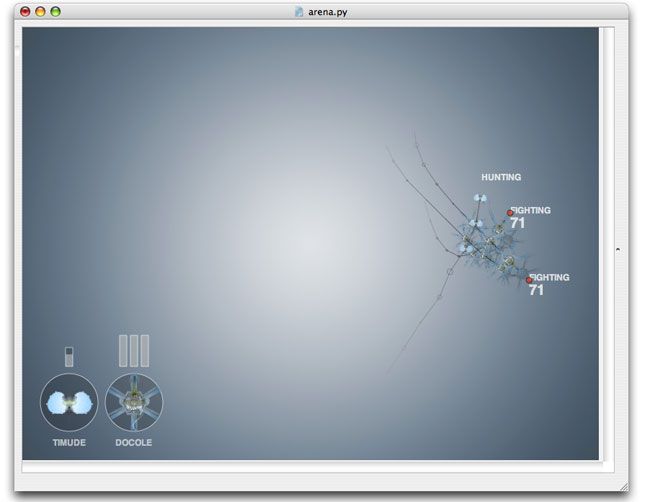 Play movie
In the example above we offer a reversed scenario: three of the Docole species against one of the Timude. You can instantly see the difference in the animation as the three work and fight together in a very aggressive manner. The poor Timude doesn't stand a chance and is eliminated from the gene tree. Life is cruel!
Further reading
Downloads
- Evolution - downloads | music and sample creatures
Exhibitions
Credits
- Concept and design: Ludivine Lechat
- Coding: Frederik De Bleser and Tom De Smedt
- Music: Siegfried Keersmaekers
The genetic algorithm was written in NodeBox, the creatures' flocking behaviour was based on Boids and Photobot was used to render the creature PNG images files.